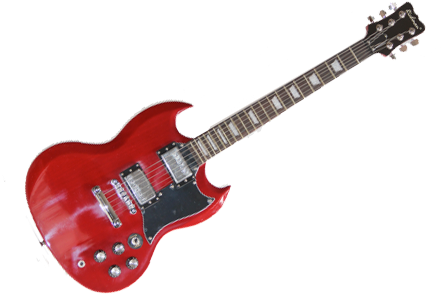
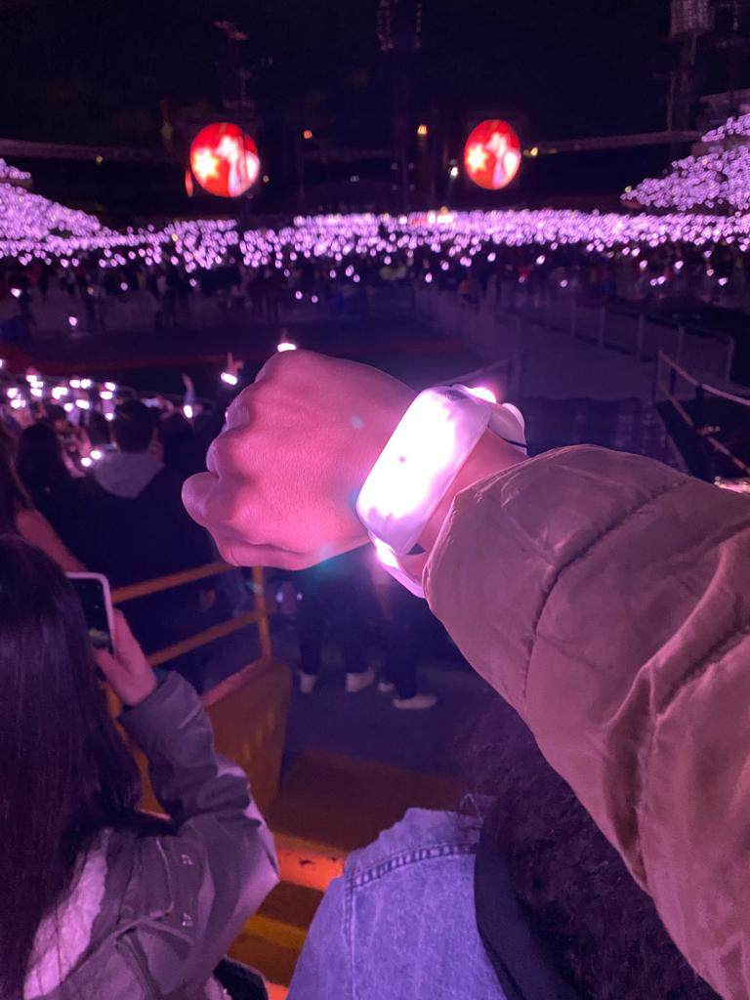
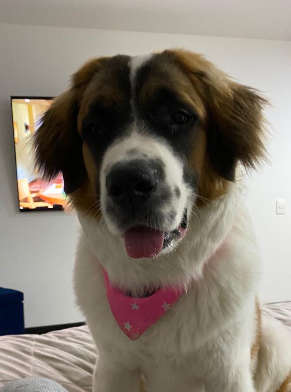

Cuando entre a bachillerato, me pusieron en un curso diferente al de mis amigos, y en el curso en el que yo estaba, no hablaba con nadie, o me caian mal la mayoria. Gracias a esta separacion aprendi a conocer mas a las personas, y aprendi a relacionarme mas con desconocidos, haciendome amigos de personas que antes no tenia intensiones de conocer o que no me caian bien. Mis primeros 2 años de bachillerato se basaron en convivir con gente diferente a mis amigos de toda la vida, por lo cual al inicio fue dificil pero luego logre adaptarme y me ayudo a formar de alguna manera la capacidad de socializar. En 7° grado, tuve que ir por primera vez a nivelar materias, y perdi ambas nivelaciones, lo que me llevo a darme cuenta de que bachillerato no era tan facil como primaria. La primera nivelacion la nivele con varios amigos por lo cual no me afecto; Logre recuperar una de las 2 materias la otra mitad de año, pero la otra no, por lo cual a final de año tuve que volver a nivelar una de esas materias. En esta nivelacion otra vez, no conocia a nadie, por lo cual fue dificil los primeros dias, ya que no tenia en quien apoyarme a la hora de estudiar, pero luego logre conocer personas, y logre pasar la nivelacion. En 8° grado volvi a estar en el mismo curso de mis amigos, y no volvi a perder mas materias.
En 9° grado seguia estudiando, y volvi a retomar la guitarra, ya que tenia el mismo objetivo de tocar algun dia guitarra electrica. En 10° grado, entre a una academia de baloncesto para enfocarme en el deporte mas competitivamente, pero apenas entre, empezo la pandemia, fue un poco dificil al comienzo ya que pensaba que iba a ser un año desperdiciado ya que iba a ser el penultimo año que estaria en el colegio, pero este año me ayudo a hacerme amigo de personas con las que antes no hablaba, amistades que me ayudarian en el futuro en diversas situaciones. Tambien en la pandemia por fin logre conseguir una guitarra electrica, cumpliendo una de mis metas desde niño. Asi mismo tambien en la pandemia hice mas ejercicio del que habia hecho antes llegando a un mejor estado fisico, y tambien logre cambiar en personalidad, ya que antes era muy callado, pero con la pandemia aprendi a hablar mas. En grado 11° porfin pudimos volver a la presencialidad, año que considero que fue el mejor de mi epoca escolar, debido a las experiencias, y a las amistades que pude hacer. Este año tuve que decidir sobre que queria estudiar, para ese entonces no tenia ni idea, y no le puse mucha atencion, hasta que llego el momento de hacer las entrevistas en las universidades. Luego de investigar distintas carreras logre decidirme por Ingenieria Informatica. Pero como todo, este año tambien tuvo su lado malo, mi perro sufrio de cancer por lo cual fallecio, suceso que me marcaria mucho, y que me sigue doliendo a dia de hoy. Luego de este emocionante año logre graduarme, y entre a la universidad.
El primer semestre fue extraño ya que hace mucho no tenia que socializar con personas que nunca habia visto. Mi primer semestre me ayudo para reforzar esas habilidades, y a ayudarme a eliminar varias caracteristicas como la pena al hablarle a desconocidos y la pena a la hora de hacer alguna accion. El segundo semestre fue divertido ya que conocia mas personas y ya tenia gente con la cual podia interactuar, aunque a su vez sufri un poco en terminos de materias, empece perdiendo POO(Programacion orientada a objetos) con una nota muy baja, y matematicas discretas. Ademas, no entendia nada de calculo, este semestre a pesar de que empezo un poco negativo en el ambito academico, logro recomponerse de la mejor manera, ayudandome a crecer como persona. Dejando de lado lo academico, este año fue muy bueno(2022) ya que vivi experiencias que no habia vivido antes, como ir a conciertos, volviendose una de mis actividades favoritas y viviendo varios de los mejores momentos que he vivido hasta el momento, y comprando una nueva mascota la cual se llama Layla. Actualmente, el 3 semestre esta un poco desafiante pero espero lograr pasasarlo sin ningun tipo de complicacion.
 